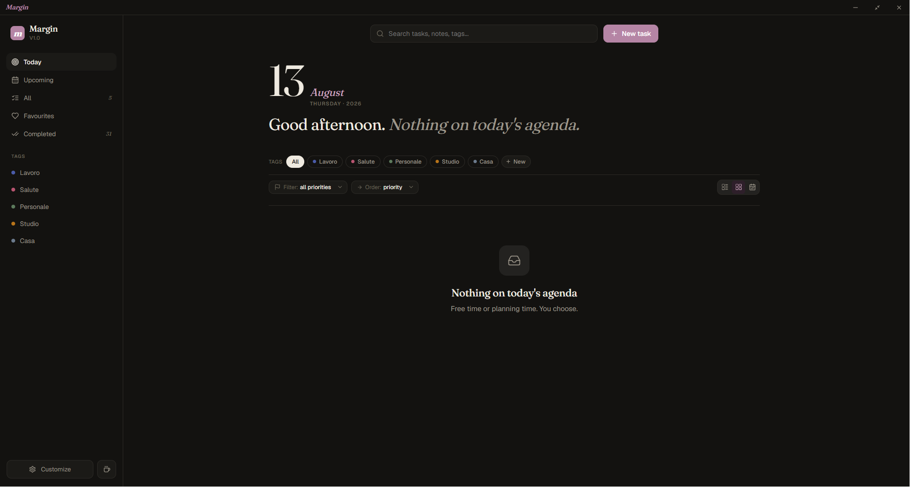

Task management
Create, organise and complete daily tasks.
App
An app for daily tasks and to-do management — a focused space to plan the day and keep track of what matters.

01 — Overview
Margin helps you manage daily tasks and to-dos without the overhead of a full project tool.
02 — Features
Create, organise and complete daily tasks.
A clear view of what needs to happen today.
03 — Under the hood
| Layer | Technologies |
|---|---|
| Frontend | — |
| Data | — |
04 — Gallery
